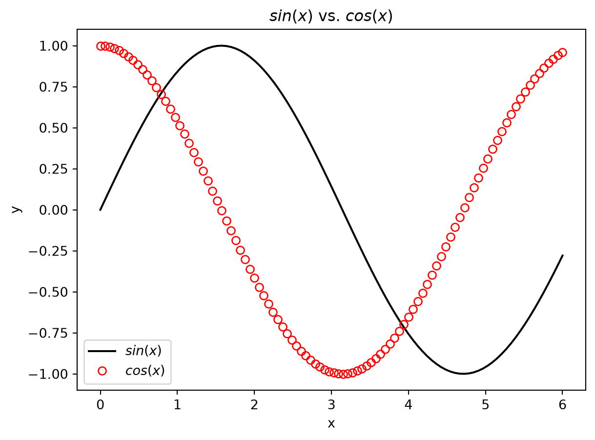
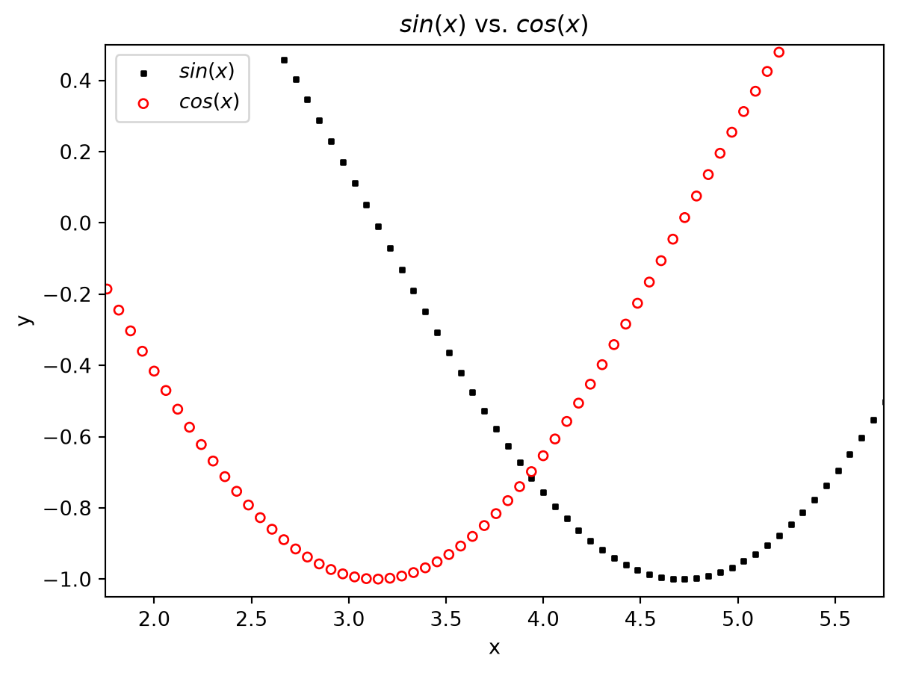
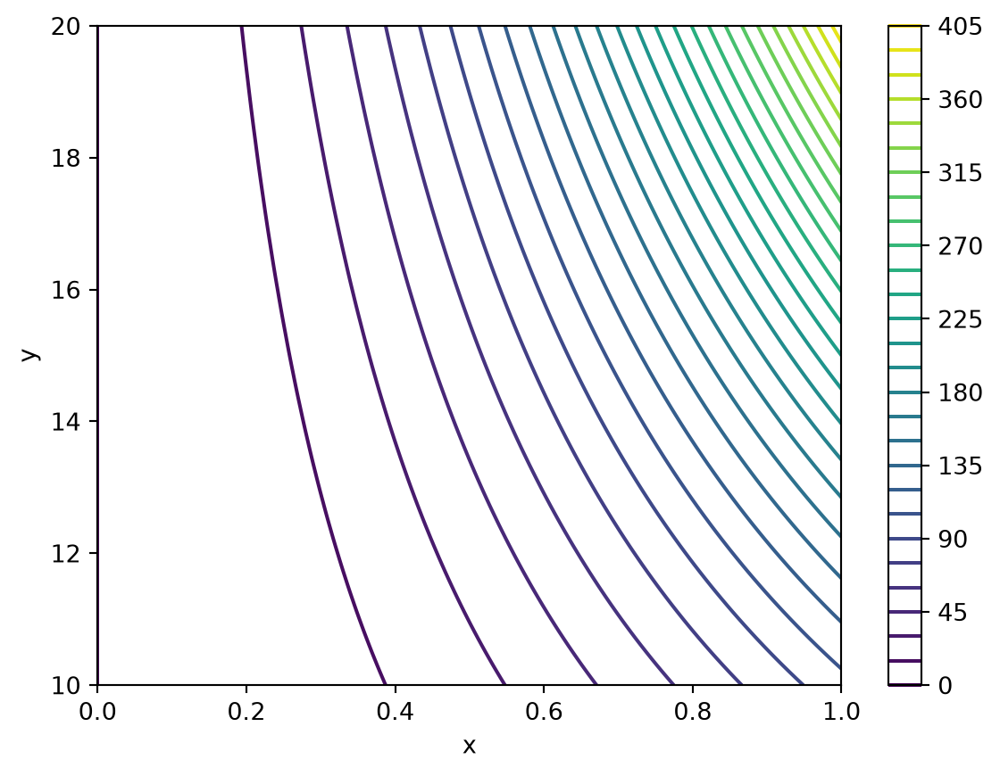
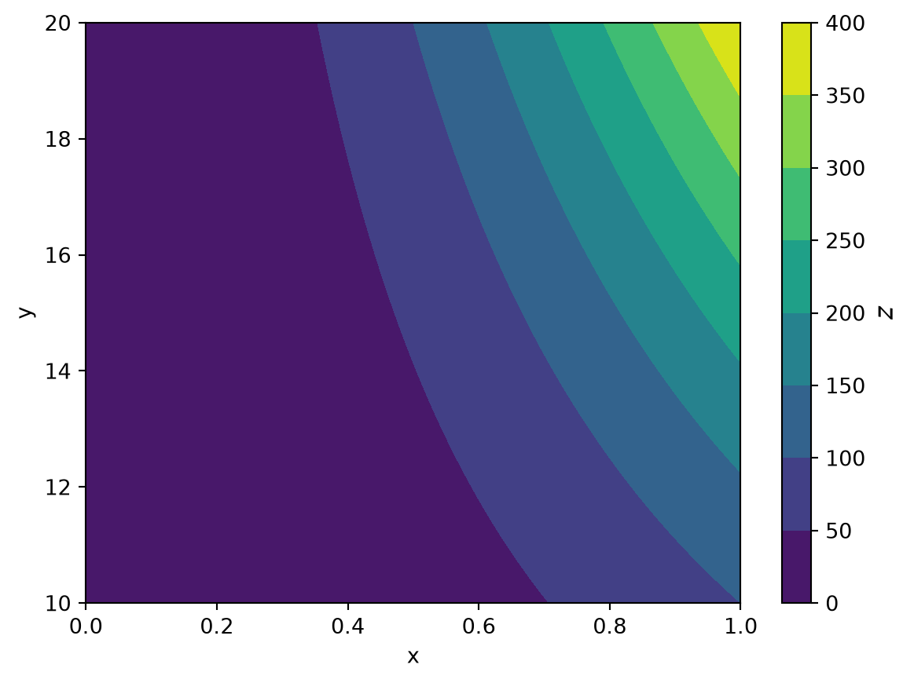
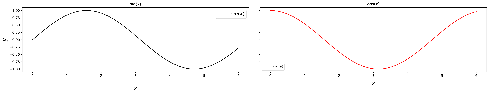

This optional refresher introduces Python patterns used in the ML course; it is not a complete programming course. Experienced Python users can skim it or return to individual sections when needed. Beginners should work through the examples and use the references for further practice.
How to use this material
Complete the Python environment steps in Exercise 1 — System setup before running the examples. From the repository root, activate the course environment and run this chapter:
Alternatively, open notebooks/python_intro.py and run its # %% cells in VS Code or another compatible editor. Run cells in order: later examples reuse earlier definitions. Plot windows may pause script execution until you close them. JupyterLab is optional. The examples use NumPy, Matplotlib, PyTorch, and Pandas from the course environment; no CFD case or GPU is required.
Predict the output before running each example, change one input, and explain what changed. You have to struggle a little bit to learn something. If you use an AI assistant, review its suggestions and recreate a small example independently to check your understanding; see How to learn with generative AI.
Start with containers, loops, and functions, then plotting and tensors. Classes, inheritance, and decorators can be revisited when you encounter them in later code. The final sections cover tabular data and error messages.
Built-in functions and data types
Functions and lambda functions
Object-oriented programming
Plotting with Matplotlib
Line plots
Scatter plots
Contour lines and filled contours
sub-plots
PyTorch tensors
Working with tensors
Common tensor operations
Handling column-like data with Pandas
Understanding error messages
References
Built-in functions and data types
Python provides a number of built-in functions and data types to simplify and accelerate common tasks. While some of these functions and structures are intuitively clear for anyone with basic math and programming knowledge, e.g., abs() for computing the absolute value of a number, others may be harder to understand. This section discusses a few heavily-used built-in functions and data structures.
Lists, tuples, and dictionaries
Lists in Python are iterable containers in which objects of different types can be stored. Common attributes of lists are that we can iterate through them, append or delete list items, or merge them. Tuples are immutable: their entries cannot be replaced, added, or removed after creation. A tuple can still contain mutable objects, such as a list. Dictionaries are containers for data that come as key-value-pairs. The key might be the name of a person and the value might be the person’s email address.
# create a list of stringslabels = ["x", "U"]print(labels)# append another labellabels.append("p")print(labels)# get the first and last elements of the listprint(f"The first label is {labels[0]} and the last label is {labels[-1]}")# delete the first list elementdel labels[0]print(labels)# append one list to anotherprint(labels + ["x", "y"])# convert a list to a tuplelabels_tuple =tuple(labels)print(labels_tuple)# store the unit associated with the label in a dictionarylabels_and_units = {}labels_and_units["x"] ="m"labels_and_units["U"] ="m/s"print(labels_and_units)
['x', 'U']
['x', 'U', 'p']
The first label is x and the last label is p
['U', 'p']
['U', 'p', 'x', 'y']
('U', 'p')
{'x': 'm', 'U': 'm/s'}
# This example intentionally raises an exception.try:# the length of a tuple is fixed labels_tuple.append("a")exceptExceptionas error:print(f"{type(error).__name__}: {error}")
AttributeError: 'tuple' object has no attribute 'append'
Looping through iterables
Both lists and tuples are iterables, meaning that we can iterate/loop through them. There are a number of strategies to iterate through one or multiple iterables, which are demonstrated in the next cell.
# classical C-like looping:# 1. determine the length of the list with len()# 2. create an iterator of indices starting from 0# 3. use the loop variable i to access list elementsfor i inrange(len(labels)):print(f"Label {i}: {labels[i]}")
Label 0: U
Label 1: p
# a much more "Pythonic" way of looping over the list itemsfor label in labels:print(label)
U
p
# in case the list index is really needed, use enumerate()for i, label inenumerate(labels):print(f"Label {i}: {label}")
Label 0: U
Label 1: p
# Pythonic loop over multiple iterablesunits = ("m/s", "Pa")for label, unit inzip(labels, units):print(f"{label} in {unit}")
U in m/s
p in Pa
# the same as above combined with enumeratefor i, (label, unit) inenumerate(zip(labels, units)):print(f"Label {i}: {label} in {unit}")
Label 0: U in m/s
Label 1: p in Pa
Both zip() and enumerate() return iterators. An iterator is consumed as you traverse it: converting the same iterator to a list a second time produces an empty list. In contrast to lists or tuples, the content of iterators is only retrieved or created when it is really needed. For example, if we want to load and process large files stored on the hard drive, an iterator allows loading and processing one file after the other in order to reduce the memory consumption. However, in most cases considered here, we can simply convert the iterator into a list or tuple.
# This example intentionally raises an exception.try:# create an iterator for labels and units labels_and_units =zip(labels, units)# convert the iterator to a list of tuples and print the listprint(list(labels_and_units))# printing the iterator directly does not have the desired effectprint(labels_and_units)# moreover, we don't have an index-based access to the iteratorprint(labels_and_units[0])exceptExceptionas error:print(f"{type(error).__name__}: {error}")
[('U', 'm/s'), ('p', 'Pa')]
<zip object at 0x789b34602000>
TypeError: 'zip' object is not subscriptable
A common error source when working with zip() is the handling of iterables with varying lengths. The iteration stops when the length of the shortest iterable passed to zip() is reached.
labels.append("x")# we unpack the iterator for printing using *print(*zip(labels, units))
('U', 'm/s') ('p', 'Pa')
Looping over the keys and values of a dictionary works in a similar way as described for list and tuples. The methods keys(), values(), and items() return iterable views of the dictionary’s keys, values, or key-value pairs, respectively. Similar to the index-based access to the content of lists and tuples, we can access the value associated with a key using the [] operator.
labels_and_units = {}labels_and_units["x"] ="m"labels_and_units["U"] ="m/s"# for each key/label, print its value/unitfor key in labels_and_units.keys():print(f"The unit of {key} is {labels_and_units[key]}")# loop over keys and values with zipfor key, value inzip(labels_and_units.keys(), labels_and_units.values()):print(f"The unit of {key} is {value}")# even short than abovefor key, value in labels_and_units.items():print(f"The unit of {key} is {value}")
The unit of x is m
The unit of U is m/s
The unit of x is m
The unit of U is m/s
The unit of x is m
The unit of U is m/s
List and dictionary comprehensions
Comprehensions express a loop that builds a list or dictionary in a compact form. Use them when they are easy to read; an ordinary loop is often clearer for complex logic. The general syntax is:
# list comprehension
result = [result_based_on_item for item in iterable]
# dictionary comprehension
result = {key_base_on_item : value_base_on_item for item in iterable}
# create a list of squared valueslist_of_numbers = [i**2for i inrange(10)]print(list_of_numbers)# create dictionary with string representationsnumbers_as_strings = {i : f"({i})"for i in list_of_numbers}print(numbers_as_strings)
Another common pattern is the addition of a logical statement to the comprehension. The extended syntax is:
# simple if condition
result = [result_based_on_item for item in iterable if condition_based_on_item]
# if-else condition
result = [result_true if condition else results_false for item in iterable]
# if-else condition for dictionaries
results = {(key_true if key_condition else key_false) : (value_true if value_condition else value_false ) for items in iterable}
# print only even numberseven_numbers = [i for i in list_of_numbers if i %2==0]print(even_numbers)# create a dictionary with even-odd-labelingeven_odd = {i : ("even"if i %2==0else"odd") for i in list_of_numbers}print(even_odd)
It is also possible to nest multiple comprehensions and conditionals. However, the resulting statements are often hard to read and error-prone. As a rule of thumb, there should be never more than two for statements inside the square or curly brackets.
Functions and lambda expressions
Functions are the simplest and most common way to avoid code duplication and to improve the program’s modularity and readability. In the function header, zero or more function parameters may be defined. Optionally, we can provide default arguments (values) for some of the parameters. The optional parameters always follow at the end of the parameter list. Moreover, functions may or may not return a result.
# function without return argumentdef print_greeting(first_name, family_name):print(f"Hello {first_name}{family_name}!")print_greeting("Horace", "Lamb")
Hello Horace Lamb!
# function with optional and return argumentdef format_arguments(parameters, arguments, separator=", "): formatted_arguments = separator.join( [f"{param}={arg}"for param, arg inzip(parameters, arguments)] )return formatted_arguments# print with default separatorprint(format_arguments(("a", "b"), (1, 2)))# print with different separatorprint(format_arguments(("a", "b"), (1, 2), "; "))
a=1, b=2
a=1; b=2
Python is dynamically typed: objects have types, while variable names can be bound to objects of different types. To document expected inputs and outputs, it is good practice to use so-called type hints in the function definition. However, note that the type hints are not checked or enforced by the interpreter. Their main purpose is improved code readability and improved documentation, e.g., when using automatic documentation generators like Sphinx.
# same as the last function above but with type hintsfrom collections.abc import Sequencedef format_arguments(parameters: Sequence[str], arguments: Sequence[object], separator: str=", ") ->str: formatted_arguments = separator.join( [f"{param}={arg}"for param, arg inzip(parameters, arguments)] )return formatted_argumentsprint(format_arguments(("a", "b"), (1, 2), "; "))
a=1; b=2
Python supports multiple assignments in a single statement (line). Moreover, functions can return multiple arguments packed in a tuple. We can assign this tuple to a variable, or we can unpack the tuple into the individual return arguments.
# more specific type hintingdef format_labels(x_label: str, y_label: str, x_unit: str, y_unit: str) ->tuple[str, str]: label_with_unit_x =f"{x_label} in {x_unit}" label_with_unit_y =f"{y_label} in {y_unit}"return label_with_unit_x, label_with_unit_y# print the packed return argumentsprint(format_labels("x", "y", "m", "m/s"))# unpack into individual parameters, then printlabel_x, label_y = format_labels("x", "y", "m", "m/s")print(f"The figure shows {label_x} plotted against {label_y}")# we can combine the unpacking and printing in a single statement using *print("The figure shows {:s} plotted against {:s}".format(*format_labels("x", "y", "m", "m/s")))
('x in m', 'y in m/s')
The figure shows x in m plotted against y in m/s
The figure shows x in m plotted against y in m/s
Lambda functions are small functions with limited complexity. In contrast to normal functions, lambda-functions consist of a single expression and are typically defined in a single line of code. Due to their limited complexity, they are often defined in place as arguments for other functions. The general syntax is:
For a reusable operation, prefer a named function defined with def. A lambda is useful for a short expression passed directly to another function.
# use lambda function to extract name suffixdef get_suffix(name, separator):return name.split(separator)[-1]folders = [f"case_{i}"for i inrange(0, 21, 5)]suffixes = [get_suffix(folder, "_") for folder in folders]for folder, suffix inzip(folders, suffixes):print(f"Folder {folder} has suffix {suffix}")# imagine you want to sort the folders according to their suffix;# naively, we could pass the list of folders to the sorted functionprint("Wrong sorting: ", sorted(folders))# as you can see in the output, the items are sorted character by character;# therefore, case_10 is listed before case_5; in some situations we may easily# miss such a mistake, e.g., when testing only suffixes between 0 and 9# solution: we need to be more precise about the sorting criterion;# we want to sort based on the suffix and we want the suffix to be interpreted as integer and not as string# the criterion can be passed to the sort function using the 'key' parameterprint("Correct sorting: ", sorted(folders, key=lambda case: int(case.split("_")[-1])))
Folder case_0 has suffix 0
Folder case_5 has suffix 5
Folder case_10 has suffix 10
Folder case_15 has suffix 15
Folder case_20 has suffix 20
Wrong sorting: ['case_0', 'case_10', 'case_15', 'case_20', 'case_5']
Correct sorting: ['case_0', 'case_5', 'case_10', 'case_15', 'case_20']
Object-oriented programming in Python
As many other programming languages, Python supports object-oriented programming. The following section provides a brief overview of object-oriented programming in python.
General structure and initialization
In Python, user-defined data types are defined with the keyword class. A class may define an __init__() method to initialize instance attributes. It is optional; methods are defined in the class body.
# let's define a simple classclass SimpleClass():# currently the __init__() method is empty, so the class won't do anythingdef__init__(self):pass# the class can now be instantiatednew_class = SimpleClass()# and we can add some attributesnew_class.new_attribute =42print("new class attribute:", new_class.new_attribute)
new class attribute: 42
The conventional parameter name self refers to the instance on which a method is called. It is not a Python keyword. Use self.attribute or self.method() to access that instance from a method.
# we can initialize a class directly with attributes and methods as well:class AddNumbers():# in this case, the value for y is given by defaultdef__init__(self, x, y =2):self.x = xself.y = y# method for adding two numbersdef add_two_numbers(self):returnself.x +self.y# since the value for y is given by default we can instantiate the class only ba passing in x as argumentadd = AddNumbers(x=1)print(f"x, y = {add.x}, {add.y}")print(f"{add.x} + {add.y} = {add.add_two_numbers()}")# alternatively, we can assign values for x and y when creating the instanceadd_2 = AddNumbers(x=5, y=37)print(f"{add_2.x} + {add_2.y} = {add_2.add_two_numbers()}")
x, y = 1, 2
1 + 2 = 3
5 + 37 = 42
Inheritance
Python supports inheritance, which allows to inherit methods and properties from other classes. This is quite convenient, because methods which are already implemented can be used and extended without the necessity to write everything from scratch. Considering the previous example, imagine we now want to add two numbers and then compute the mean of it:
# we could implement a completely new class from scratch...class ComputeMean():def__init__(self, x, y):self.x = xself.y = y# method for adding two numbersdef mean_of_two_numbers(self):return (self.x +self.y) /2# now compute the mean of two numberscomp_mean = ComputeMean(5, 3)print("mean of 5 and 3 = ", comp_mean.mean_of_two_numbers())
mean of 5 and 3 = 4.0
# ... or we can reuse the addition method by inheriting the properties of our previously implemented class 'AddNumbers':class ComputeMean(AddNumbers):def__init__(self, x, y):# we need to initialize the parent class with the method 'super()' and also the attributes we want to accesssuper().__init__(x, y)def mean_of_two_numbers(self):# now we can use the method 'add_two_numbers()' we already implemented in the parent classreturnself.add_two_numbers() /2# compute the mean of 8 and 4comp_mean = ComputeMean(8, 4)print("mean of 8 and 4 = ", comp_mean.mean_of_two_numbers())# but we can also directly access the 'add_two_numbers' method from the parent class without calling itprint("8 + 4 = ", comp_mean.add_two_numbers())
mean of 8 and 4 = 6.0
8 + 4 = 12
The parent class from which we want to inherit the properties needs to be passed into our child class as argument, as can be seen in the above examples. Further, we need to initialize the parent class using super(). This allows us to access methods and other properties of the parent class without the need to implement them again in the child class. When calling the super() method, the attributes we want to initialize need to be passed into the __init__() method as well, e.g. the following fails because the required x argument is missing from the parent initializer:
# This example intentionally raises an exception.try:class ComputeMean(AddNumbers):def__init__(self, x, y):# if we forget to initialize the attributes, then we won't have access to itsuper().__init__()def mean_of_two_numbers(self):returnself.add_two_numbers() /2# compute the mean of 8 and 4 comp_mean = ComputeMean(x=4, y=8)print("mean of 8 and 4 = ", comp_mean.mean_of_two_numbers())exceptExceptionas error:print(f"{type(error).__name__}: {error}")
class ComputeMean(AddNumbers):def__init__(self, x, y):# let's just initialize y and see what happenssuper().__init__(y)def mean_of_two_numbers(self):returnself.add_two_numbers() /2# compute the mean of 8 and 4comp_mean = ComputeMean(x=4, y=8)print("mean of 8 and 4 = ", comp_mean.mean_of_two_numbers())
mean of 8 and 4 = 5.0
In this case, the parameter y which is passed into our super().__init__() method is interpreted as x, since the y parameter is already set by default and therefore not required. The Python interpreter assumes that, if only one argument is given, it has to be the parameter x. If we want Python to interpret this one parameter as y, we have to use a keyword argument:
# This example intentionally raises an exception.try:class ComputeMean(AddNumbers):def__init__(self, x, y):# this time we specifically initialize the parameter y as ysuper().__init__(y=y)def mean_of_two_numbers(self):returnself.add_two_numbers() /2# compute the mean of 8 and 4 comp_mean = ComputeMean(x=4, y=8)print("mean of 8 and 4 = ", comp_mean.mean_of_two_numbers())exceptExceptionas error:print(f"{type(error).__name__}: {error}")
Now we get the error message again, showing us that we forgot to initialize the x parameter.
Decorators
Functions are represented as objects in python and can therefore be passed into other functions as arguments or returned by functions. Decorators use this property, by taking function objects as arguments and then modifying its behavior. The following examples where adopted from Python Decorators in 15 Minutes.
# let's define a function which only prints its namedef function1():print("function 1")# now we define a function taking another function as argument and then calling this functiondef function2(f): f()# now we can execute function1...function1()# ... or we can pass function1 into function2 and execute it within function2:function2(function1)
function 1
function 1
# we can extend this example by adding another function into our function2def function3(f):# let's use this function to execute whatever function is passed into function3def some_wrapper_function():print("starting function") f()print("function ended")return some_wrapper_function# calling the wrapper functionprint("calling function3 with function1 as argument:\n", function3(function1))
calling function3 with function1 as argument:
<function function3.<locals>.some_wrapper_function at 0x789aecd15620>
As shown in this example, \(function1\) is not executed within the \(some\_wrapper\_function\). This is because \(function3\) returns \(some\_wrapper\_function\) as an object. In order to execute this object, we need to add parenthesis:
# function3 returns an object, still need to execute the functionfunction3(function1)()
starting function
function 1
function ended
Now we get the expected output. Using this notation, however, can get quite confusing, especially if more complex functions are involved. To avoid this we can assign the returned function object to another variable:
# we can assign the function call to another object, e.g. x and then call x()x = function3(function1)# now the variable x represents the function3 object called with function1 as argument and we can just execute itx()
starting function
function 1
function ended
Instead of assigning the function object to a variable and then execute this object, Python provides decorator syntax: @function3 applies function3 to the function defined immediately below it and binds the returned wrapper to the same name. It does not execute the wrapper until that function is called:
# a decorator replaces the function with the result of applying the decorator@function3# this is equivalent to: x = function3(x)def x():print("executing function x using a decorator")# since x is an object, we need to add parenthesis to execute itx()
starting function
executing function x using a decorator
function ended
Plotting with Matplotlib
Matplotlib is a library for creating plots and visualizing data. This section deals with the basic usage of Matplotlib in order to create simple plots. A more thorough introduction can be found in the references.
Line plots
Simple line plots can be created with the method plot() located in matplotlib.pyplot:
import matplotlib.pyplot as pltimport torch as ptpt.manual_seed(7)# create some datax = pt.linspace(0, 6, 100)y = pt.sin(x)y2 = pt.cos(x)# now let's plot the dataplt.plot(x, y, color="black", label="$sin(x)$")# we can customize the lines as wellplt.plot(x, y2, color="red", label="$cos(x)$", marker="o", fillstyle="none", linestyle="None")# add axis labels, a legend and a titleplt.legend()plt.xlabel("x")plt.ylabel("y")plt.title("$sin(x)$ vs. $cos(x)$")# in order to diplay the plot, we need to call the show() methodplt.show()

Scatter plots
In the same way, we can create scatter plots using the scatter method:
# this time, let's plot the data as scatter plot, s = size of markersplt.scatter(x, y, color="black", label="$sin(x)$", s=5, marker="s")plt.scatter(x, y2, color="red", label="$cos(x)$", s=20, marker="o", facecolors="none")# zoom in a little bit by setting new x- and y-limitsplt.xlim(1.75, 5.75)plt.ylim(-1.05, 0.5)# the rest is the same...plt.legend()plt.xlabel("x")plt.ylabel("y")plt.title("$sin(x)$ vs. $cos(x)$")plt.show()

Contour and filled contour plots
Further, contour plots can be created in order to display a scalar field on a two-dimensional grid with the contour() method:
from numpy import meshgrid# create coordinates for a two-dimensional scalar fieldx = pt.linspace(0, 1, 100)y = pt.linspace(10, 20, 100)# in order to get one datapoint for each (x, y) tuple, we create a grid of (x, y) tuples with meshgridx_new, y_new = meshgrid(x, y)# now we can use the grid to generate a matrix of data in z-direction, so for each (x, y) tuple there exist one z data pointz = x_new**2* y_new**2# now create contour plot, levels = number of isolines in the plotplt.contour(x, y, z, levels=30)# again we can add some labels and a colorbarplt.xlabel("x")plt.ylabel("y")plt.colorbar()plt.show()

# alternatively, contourf() fills the intervals between contour levels:plt.contourf(x, y, z)plt.xlabel("x")plt.ylabel("y")# in general, the colorbar can be further customizedcbar = plt.colorbar()cbar.set_label(label="$z$", fontsize=12)plt.show()

Sub-plots
Instead of only creating one plot at a time, Matplotlib provides a subplots() method for creating multiple plots within one figure, which also allows us to customize our plots further. There exists a variety of options, which can be found in the subfigures documentation. A possible implementation could be:
# use the data we already created when plotting the sin(x) and cos(x), but this time we want them to be in seperate plotsx = pt.linspace(0, 6, 100)y = pt.sin(x)y_2 = pt.cos(x)# now we create a subfigure with 2 columns and one row, but both plots should have the same y-axis, further# we want the figure to have a size of 20x4 (width x heigth)fig, ax = plt.subplots(nrows=1, ncols=2, figsize=(20, 4), sharey=True)# let's plot the data ax referes to the axis on which we want to plot the data (counting from left -> right)ax[0].plot(x, y, color="black", label="$sin(x)$")ax[1].plot(x, y_2, color="red", label="$cos(x)$")# when adding labels, the method is now called with a 'set_...' in front of the methodsax[0].set_ylabel("$y$", fontsize=16)# we can increase the space between the x-ticks and the axis label using the keyword 'labelpad' as wellax[0].set_xlabel("$x$", fontsize=16, labelpad=25)ax[1].set_xlabel("$x$", fontsize=16, labelpad=10)# we can set different subtitles as wellax[0].set_title("$sin(x)$")ax[1].set_title("$cos(x)$")# and also customize the legendax[0].legend(loc="upper right", fontsize=14)ax[1].legend(loc="lower left", fontsize=10)# and adjust the white space between the subplots, so it looks a little bit nicerfig.tight_layout()fig.subplots_adjust(wspace=0.05, top=0.9)plt.show()

PyTorch
Working with tensors
The PyTorch library provides efficient data structures for operating with large amounts of data, e.g. tensors as well as tools for deep learning and neural networks. The following section gives a brief overview on what tensors are and how to operate with them. Tensors store elements of a certain type, e.g., floating point numbers in a multi-dimensional matrix. Create a tensor from existing values with pt.tensor(...), or use a factory such as pt.zeros, pt.ones, or pt.rand. Zero initialization is not required. Factory functions take a shape; tensors can also be reshaped without changing their number of elements.
import torch as pt# creating a 1x1 tensor filled with zeros, the size argument takes a tuple with (number of rows, number of columns)t = pt.zeros(size=(1, 1))print("1x1 tensor:\n", t)# similarily, we can create an column vector [x, y, z]^T filled with zerost = pt.zeros(size=(3, 1))print("\n3x1 column vector:\n", t)# in the same way, we can also create a 3x3 matrix filled with onest = pt.ones(size=(3, 3))print("\n3x3 matrix:\n", t)
Alternatively, other data types such as lists can be converted to tensors. All elements of the resulting tensor share one dtype. Compatible numeric types are promoted to a common dtype; strings are not valid numeric tensor elements.
# creating a list and converting it to a tensora = [1, 2, 3]a_tensor = pt.tensor(a)print("original list:\n", a)print("\nconverted to tensor:\n", a_tensor)# this also works for nested listsb = [[1, 2], [3, 4]]b_tensor = pt.tensor(b)print("\noriginal list:\n", b)print("\nconverted to tensor:\n", b_tensor)
original list:
[1, 2, 3]
converted to tensor:
tensor([1, 2, 3])
original list:
[[1, 2], [3, 4]]
converted to tensor:
tensor([[1, 2],
[3, 4]])
When converting lists to tensors, some problems may occur as shown in the following examples:
# This example intentionally raises an exception.try:# strings cannot be converted into a numeric tensor: a = [1, 2, "a"] b = pt.tensor(a)exceptExceptionas error:print(f"{type(error).__name__}: {error}")
TypeError: new(): invalid data type 'str'
# This example intentionally raises an exception.try:# also if nested lists are to be converted, the dimensions have to be consistent throughout the list a = [[1, 2], [3, 4, 5]]# this is not working, because 1st element is 2 long and 2nd element has a length of 3 b = pt.tensor(a)exceptExceptionas error:print(f"{type(error).__name__}: {error}")
ValueError: expected sequence of length 2 at dim 1 (got 3)
A tensor’s shape is a tuple of dimension sizes. For a matrix, shape (rows, columns) has two dimensions; a vector with shape (n,) has one. Higher dimensions can represent batches, channels, or spatial coordinates depending on the application. Indices start at zero, and slice stop indices are excluded. Check .shape or .size() rather than guessing what an axis represents. See the PyTorch tensor introduction.
# create a 3x3 tensor filled with random numbersrandom_tensor = pt.randn(size=(3, 3))# this tensor has 3 rows and 3 columnsprint("3x3 tensor with random numbers:\n", random_tensor)
3x3 tensor with random numbers:
tensor([[-0.1468, 0.7861, 0.9468],
[-1.1143, 1.6908, -0.8948],
[-0.3556, 1.2324, 0.1382]])
# now let's access the 2nd element of the first row (indices start at zero)print("2nd element of 1st row: ", random_tensor[0, 1])# we can also access the last element of the 1st row by using [-1] as index:print("last element of 1st row:", random_tensor[0, -1])# complete rows or columns can be accessed by using [:]print("\nall columns of 1st row:", random_tensor[0, :])print("all rows of 2nd column:", random_tensor[:, 1])# now lets get the a 2x2 submatrix of the tensor containing the rows 1, 2 and columns 1, 2:print("\n2x2 matrix of tensor:\n", random_tensor[:2, :2])# similarily, we can get the elements of the last two rows and columns:print("\n2x2 matrix of tensor:\n", random_tensor[1:, 1:])
2nd element of 1st row: tensor(0.7861)
last element of 1st row: tensor(0.9468)
all columns of 1st row: tensor([-0.1468, 0.7861, 0.9468])
all rows of 2nd column: tensor([0.7861, 1.6908, 1.2324])
2x2 matrix of tensor:
tensor([[-0.1468, 0.7861],
[-1.1143, 1.6908]])
2x2 matrix of tensor:
tensor([[ 1.6908, -0.8948],
[ 1.2324, 0.1382]])
# further, we can specify ranges which we want to accessrandom_tensor = pt.rand(size=(4, 4))print("original tensor:\n", random_tensor)# get rows at indices 1, 2 and columns at indices 2, 3print("\nrows [1:3] & columns [2:4]:\n", random_tensor[1:3, 2:4])
As can be seen in this example, when using the range [1:3, 2:4], the stop indices 3, 4 are excluded resulting in a 2x2 tensor as output. In general, the size of a tensor can be determined by using the size() method:
# get the size of this tensorprint("size of the original tensor: ", random_tensor.size())print("\nsize of the sub-matrix within the tensor: ", random_tensor[1:3, 2:4].size())
size of the original tensor: torch.Size([4, 4])
size of the sub-matrix within the tensor: torch.Size([2, 2])
Common tensor operations
Algebraic operations
A great advantage of using tensors is the fact that algebraic operations, such as elements-wise addition, can easily be done using +, -, *, /:
# create two tensorsa = pt.tensor([1, 2, 3])b = pt.tensor([1, 1, 1])# now add them element-wise:c = a + bprint(c)# of course, this can be extended to higher dimensions:x = pt.randint(low=0, high=5, size=(2, 3))y = pt.randint(low=0, high=5, size=(2, 3))print("\nx = ", x)print("\ny = ", y)print("\nx + y = ", x + y)
tensor([2, 3, 4])
x = tensor([[1, 2, 0],
[0, 4, 1]])
y = tensor([[4, 2, 2],
[1, 4, 3]])
x + y = tensor([[5, 4, 2],
[1, 8, 4]])
# a matrix-vector product can be computed using @x = pt.randint(low=0, high=3, size=(2, 3))y = pt.randint(low=0, high=3, size=(3, 1))print("x = \n", x)print("\ny = \n", y)# compute the matrix-vector product of x and yprint("\nx * y = \n", x @ y)
x =
tensor([[2, 1, 0],
[2, 2, 0]])
y =
tensor([[0],
[0],
[2]])
x * y =
tensor([[0],
[0]])
flatten()
The flatten() method reshapes an arbitrary \(n\)-dimensional tensor to a one-dimensional tensor:
# create tensorx = pt.rand(size=(2, 3))# then flatten the tensory = x.flatten()print("original tensor:\n", x)print("\nflattened tensor:\n", y)print("\nsize of original tensor:", x.size())print("size of flattened tensor:", y.size())
original tensor:
tensor([[0.4990, 0.7447, 0.7213],
[0.4414, 0.5550, 0.6361]])
flattened tensor:
tensor([0.4990, 0.7447, 0.7213, 0.4414, 0.5550, 0.6361])
size of original tensor: torch.Size([2, 3])
size of flattened tensor: torch.Size([6])
reshape()
In contrast to flatten(), reshape() can be used to reshape a tensor to specific dimensions instead of reshaping it to a one-dimensional tensor. An important requirement for using the reshape() method is that the output tensor has the same number of elements as the input tensor.
# create tensor with 6 rows and 2 columnsx = pt.rand(size=(6, 2))print("original tensor:\n", x)# reshape it to a row-vectory = pt.reshape(x, shape=(1, 12))print("\nreshaped tensor:\n", y)# alternatively, reshape it to a matrix with 3 rows and 4 columnsz = pt.reshape(x, shape=(3, 4))print("\nreshaped tensor:\n", z)
When using reshape() the dimensions have to match, meaning the number of elements need to be the same. The following will not work:
# This example intentionally raises an exception.try:# create tensor x = pt.rand(size=(6, 2))# this will not work since x has 6*2=12 elements and y would only have 3*3=9 elements y = pt.reshape(x, shape=(3, 3))exceptExceptionas error:print(f"{type(error).__name__}: {error}")
RuntimeError: shape '[3, 3]' is invalid for input of size 12
squeeze() and unsqueeze()
The squeeze() method removes dimensions with the size of \(1\) from a tensor. If we have for example a \(3x2x1\)-dimensional tensor, using the squeeze() method would lead to a tensor with the dimensions of \(3x2\) by removing the \(3^{rd}\) dimension (since the \(3^{rd}\) dimension is \(1\)). If there exist multiple dimensions with the size of \(1\), using squeeze() removes all of them. A specific dimension which shall be removed can be specified by the keyword argument dim, in case this is unwanted. The squeeze() method is frequently used, e.g. when passing features into a neural network, as shown in Introduction to machine learning. Consequently, the unsqueeze() method inserts a dimension of the size \(1\) at a specified dimension of the input tensor.
# create tensorx = pt.rand(size=(3, 1))# then squeeze the tensory = x.squeeze()# unsqueeze the tensor in "row"-dimensionz = y.unsqueeze(dim=0)# unsqueeze the tensor in "column"-dimensionz_2 = y.unsqueeze(dim=1)print("original tensor:\n", x)print("\nsqueezed tensor:\n", y)print("\nunsqueezed tensor (dim=0):\n", z)print("\nunsqueezed tensor (dim=1):\n", z_2)print("\nsize of original tensor:", x.size())print("size of squeezed tensor:", y.size())print("size of unsqueezed tensor (dim=0):", z.size())print("size of unsqueezed tensor (dim=1):", z_2.size())
original tensor:
tensor([[0.7743],
[0.5278],
[0.9356]])
squeezed tensor:
tensor([0.7743, 0.5278, 0.9356])
unsqueezed tensor (dim=0):
tensor([[0.7743, 0.5278, 0.9356]])
unsqueezed tensor (dim=1):
tensor([[0.7743],
[0.5278],
[0.9356]])
size of original tensor: torch.Size([3, 1])
size of squeezed tensor: torch.Size([3])
size of unsqueezed tensor (dim=0): torch.Size([1, 3])
size of unsqueezed tensor (dim=1): torch.Size([3, 1])
# by using the keyword argument 'dim', the dimension to be removed can be specified in case there exist multiple dimensions with the size of 1x = pt.rand(size=(1, 3, 1, 2))# remove all dimensions with the size of 1y = x.squeeze()# only remove the last dimensionz = x.squeeze(dim=2)print("original tensor:\n", x)print("\nsqueezed tensor:\n", y)print("\nsqueezed tensor for 3rd dim:\n", z)print("\nsize of original tensor:", x.size())print("size of squeezed tensor:", y.size())print("size of squeezed tensor for 3rd dim:", z.size())
original tensor:
tensor([[[[0.1470, 0.2019]],
[[0.7259, 0.4731]],
[[0.0444, 0.1539]]]])
squeezed tensor:
tensor([[0.1470, 0.2019],
[0.7259, 0.4731],
[0.0444, 0.1539]])
squeezed tensor for 3rd dim:
tensor([[[0.1470, 0.2019],
[0.7259, 0.4731],
[0.0444, 0.1539]]])
size of original tensor: torch.Size([1, 3, 1, 2])
size of squeezed tensor: torch.Size([3, 2])
size of squeezed tensor for 3rd dim: torch.Size([1, 3, 2])
zeros() vs. zeros_like()
Use zeros() when you know the desired shape directly. The zeros_like() method, however, is an efficient way to generate a tensor filled with zeros by using another tensor. For example, consider having a tensor \(x\) filled with some values and we want to create a tensor \(y\), which has the same size of \(x\) but is filled with zeros. Instead of using y = pt.zeros(size=x.size()) we can create \(y\) as y = pt.zeros_like(x).
# creating a tensor filled with zerosx = pt.zeros(size=(2, 2))# create tensor filled with some random numbersy = pt.rand(size=(2, 2))# use zeros_like() to create tensor of the same shape as y, but filled with zerosz = pt.zeros_like(y)print("tensor initialized with zeros:\n", x)print("\ntensor initialized with random numbers:\n", y)print("\nusing zeros_like() method:\n", z)
tensor initialized with zeros:
tensor([[0., 0.],
[0., 0.]])
tensor initialized with random numbers:
tensor([[0.1956, 0.8861],
[0.7264, 0.8868]])
using zeros_like() method:
tensor([[0., 0.],
[0., 0.]])
min() vs. argmin()
The min() method in torch returns the minimum of a \(n-\)dimensional tensor. In a lot of cases, additionally the position of the minimum element is required. To get the index of the minimum element, we can use the argmin() method of torch. The maximum element and it’s position can analogously be determined by using max() and argmax() respectively.
# creating tensor filled with random numbersx = pt.rand(size=(1, 5))print("x = ", x)print(f"min(x) = {'{:.4f}'.format(pt.min(x).item())} at position {pt.argmin(x).item()}")
x = tensor([[0.1278, 0.0125, 0.1721, 0.5535, 0.4012]])
min(x) = 0.0125 at position 1
Combining tensor operations
Combining operations can make a calculation easier to follow. Keep the mathematical quantity explicit: for a residual vector \(r=x-y\), the mean squared error is \(\mathrm{MSE}=\frac{1}{n}\sum_i r_i^2\), whereas its Euclidean norm is \(\lVert r\rVert_2=\sqrt{\sum_i r_i^2}\). They have different scaling and units. The PyTorch vector norm computes the latter.
# Use known values so we can check the result independently.x = pt.tensor([3.0, 4.0])y = pt.tensor([0.0, 0.0])residual = x - ymse = residual.square().mean()l2_norm = pt.linalg.vector_norm(residual)print("Mean squared error:", mse.item()) # (9 + 16) / 2 = 12.5print("Euclidean norm:", l2_norm.item()) # sqrt(9 + 16) = 5assert pt.isclose(mse, pt.tensor(12.5))assert pt.isclose(l2_norm, pt.tensor(5.0))
Mean squared error: 12.5
Euclidean norm: 5.0
Handling tabular data with Pandas
Pandas is a library providing many tools for data analysis. In Pandas so called DataFrames are largely used, which is a similar way of structuring data as in the built-in dict(). Since Pandas provides a vast amount of tools, within this section only the read_csv() method, which is frequently used throughout the lecture and exercise, shall be presented.
The read_csv() method can be used to read in \(.csv\) files column-like data. Although the method is named read_csv(), other file types can be read in as well, while the data within the files can be separated by any arbitrary separator. This separator has to be specified as keyword argument when calling the function. The following example illustrates a possible use of the read_csv() method.
read_csv also reads whitespace-separated tables. Here, skiprows=[*range(10), 11] skips the first ten lines and the dashed separator on line index 11 (counting from zero). The column-name line at index 10 remains, so header=0 uses it as the header. sep=r"\s+" treats runs of whitespace as separators. These line numbers are specific to this string, including its leading blank line. Inspect the actual file before choosing them. See the Pandas API reference.
from pandas import read_csv# let's import this file# for a real .csv file, replace dummy_csv with the file pathdata = read_csv(dummy_csv, sep=r"\s+", skiprows=[*range(10), 11], header=0)# we can print out the first few lines to see if we did everything correcly using data.head():print(data.head())assert data.shape == (9, 9)assertabs(data["CL"].iloc[0] -0.4239) <1e-12
Alternatively, we can specify which columns we want to read in using the keyword usecols and change the names of these columns as well with the keyword names:
# only read in the 1st two columns and give them a different namedata = read_csv(StringIO(dummy_str), sep=r"\s+", skiprows=[*range(10), 11], header=0, usecols=[0, 1], names=["aoa", "cl"])print(data.head())
The data in the dataframe can now be accessed by the names of the columns, similarly to dicts, e.g., by typing aoa = data["aoa"], we would assign all the data of the aoa column to the variable aoa.
Dealing with error messages and debugging code
Errors are part of programming. Read the exception type and message first, locate the relevant line in your code, and inspect the input values, types, and shapes. Reduce the problem to a small example, form a hypothesis, and test one change at a time. VS Code’s debugger can pause execution and show local variables.
A traceback lists the calls leading to an exception. The demonstrations below catch intentional errors so the rest of this chapter can still run. traceback.print_exc() displays the traceback within the handler; ordinarily, an uncaught exception prints it and stops the script.
# This example intentionally raises an exception.try:# Deliberately invalid indentation, executed to demonstrate the error.exec('# 1st example: indentation error\nfor i in range(3):\n if i == 1:\n print(i)\n else:\n print(i+1)')exceptExceptionas error:print(f"{type(error).__name__}: {error}")
IndentationError: unindent does not match any outer indentation level (<string>, line 5)
In this example, the code itself seems to be fine. A look at the end of the error message, however, tells us that there is something wrong with the else statement. The IndentationError occurs, if the blocks of code are not aligned correctly. We can fix this by adding one space in front of the else statement, so that it is aligned with the if statement.
# This example intentionally raises an exception.try:# 2nd example: how to deal with tracebacksimport matplotlib.pyplot as plt# create some function for plotting datadef plot_data(x, y): fig, ax = plt.subplot(1, 1) ax.plot(x, y, color="black") ax.set_xlabel("x") ax.set_ylabel("y") plt.show()# 'if __name__=="__main__":' means that the following code is only executed when this script is executed as 'main',# but if we call the 'plot_data' function from another script, this won't be executedif__name__=="__main__": x = [1, 2, 3] y = [0.5, 0.8, 1.5] plot_data(x, y)exceptException:import traceback traceback.print_exc()
<Figure size 672x480 with 0 Axes>
The plotting example deliberately calls plt.subplot(1, 1) with invalid arguments. The traceback identifies the call to plot_data and the failing line inside it. The intended call is fig, ax = plt.subplots(1, 1): subplots returns a figure and axes. Inspect the API and the arguments before changing code; library bugs are possible, but the traceback alone does not establish one.
In a lot of cases the cause of an error is rather simple as shown in the previous examples. Some commonly made mistakes may be:
forgotten or wrong brackets, e.g. using () instead of [] when trying to access elements of a list (in contrast to other languages such as Matlab, where () is used to access elements)
too many brackets, e.g. because some expression was deleted but the closing bracket is still present: call_some_method(parameter))
confusing similar methods, such as plt.xlabel("...") vs. ax.set_xlabel("...") methods within the matplotlib.pyplot library
using a wrong separator when reading in files, e.g., with the pandas library
Python is quite sensitive to indents (in contrast to other languages such as C++), meaning each block of code needs to be aligned